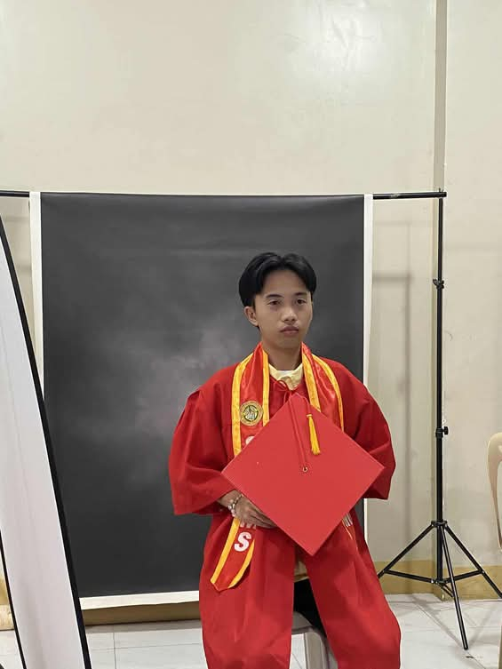

ANNYEONGHASEYO!
A photo of me today.
“You wanna know about me? Well, I’m a kind heart, funny, and friendly man who loves learning new things and improving myself every day. I enjoy working with others, sharing ideas, and facing challenges that help me grow. I believe that with hard work and positivity, I can achieve my goals and inspire others to do the same.”
Personal Information
Here are some key details about me:
- Full Name: Steve Nash Y. Cumba
- Age: 18
- Born in: July 10, 2007 at Vincente Sotto Memorial Medical Center Cebu
- Current Location: Bukid-Bukid Pajac Lapu-Lapu City
- Email: stevenashcumba3@gmail.com
- Phone: 09355057283
Early Life

Me during my early years.
I grew up in Bukid-Bukid Pajac Lapu-Lapu City. As a child, I like playing outside with my friend. We played hide and seek or tumbang preso etc. My family helped me learn important lessons about what is good and bad. One memorable moment was we travelled in Animals Park I forget what the name of that park but It was very fun and I enjoyed it.
Education and Achievements
When I was in Elementary at Abuno Elementary School. I achieved With honors and Conduct Awards. In high school also at Abuno Hugh School I haven't achieved any medals or conduct awards. Senior High School I studied ABM which is Business Accountacy and Management I achieved conduct awards and later studied Computer Technology at Lapu-Lapu City College.
Hobbies and Interests
Enjoying one of my favorite hobbies.
In my free time, I enjoy activities that bring me joy and relaxation. Some of my hobbies include:
- Playing Basketball
- Playing Mobile Games
- Playing Chess
- Watching K-drama's
My Ambitions

My main ambition is to become a successful in future and to travel with my family to another country. To achieve this, I want to word hard and finish college life. I believe ambition comes from passion and persistence.
Social Media
Connect with me online! Follow my updates and share thoughts:
Social Media
Connect with me online! Follow my updates and share thoughts: